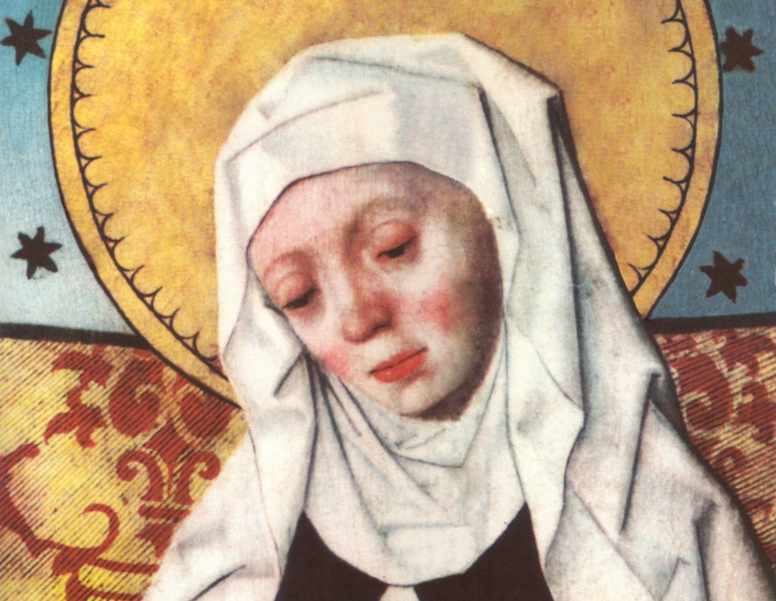

„Hoće li tko za mnom, neka se odreče samoga sebe, neka uzme svoj križ i neka ide za mnom.” (Mt 16,24)

Sveta Brigita Švedska, rođena oko 1303. godine u uglednoj švedskoj plemićkoj obitelji, jedna je od najznačajnijih mističarki i reformatorica srednjovjekovne Europe. Već u mladosti pokazivala je iznimnu pobožnost, a njezin život obilježen je brojnim vizijama i duhovnim iskustvima koja je kasnije zabilježila u svojim „Otvaranjima“ (Revelationes). Udala se za bogatog plemića Ulfa Gudmarssona s kojim je imala osmero djece, uključujući i svetu Katarinu Švedsku.
Nakon što je nadživjela supruga, Brigita je ostvarila svoj životni san i posvetila se potpunosti Bogu. Putovala je Europom, posjećujući sveta mjesta i obraćajući se moćnicima, uključujući i papu u Avignonu, kojeg je molila da se vrati u Rim. Njezina proročanstva i duhovni savjeti imali su velik utjecaj na crkveni i politički život tog doba. Osnovala je vlastiti red, Red Presvetog Spasitelja (Brigitinci), koji je bio poznat po strogom asketskom životu i posvećenosti molitvi za obraćenje grešnika. Umrla je 1373. godine u Rimu, a njezino tijelo preneseno je u samostan Vadstena, koji je postao središte štovanja i hodočašća. Papa Ivan Pavao II. proglasio ju je 1999. suzaštitnicom Europe, prepoznajući njezin doprinos kršćanskom jedinstvu i duhovnoj obnovi Staroga kontinenta.
Njezina duhovnost, prožeta dubokom ljubavlju prema Kristovoj muci i Presvetoj Euharistiji, ostavila je neizbrisiv trag u europskoj pobožnosti. Danas se štuje kao zaštitnica Švedske, Europe i žena, a njezin život i djela i dalje inspiriraju vjernike diljem svijeta da žive autentičnim kršćanskim životom u molitvi, pokori i služenju bližnjima.